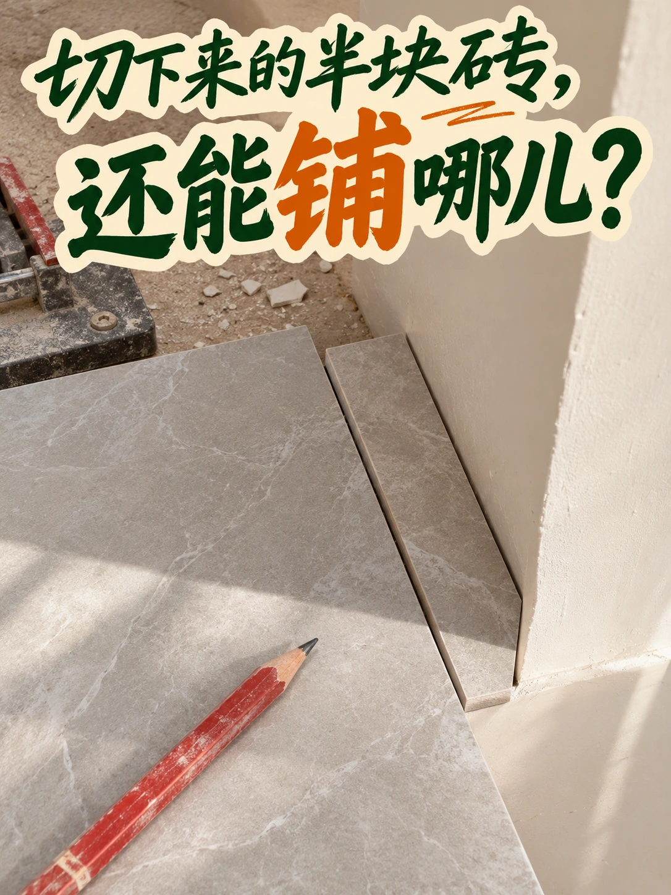
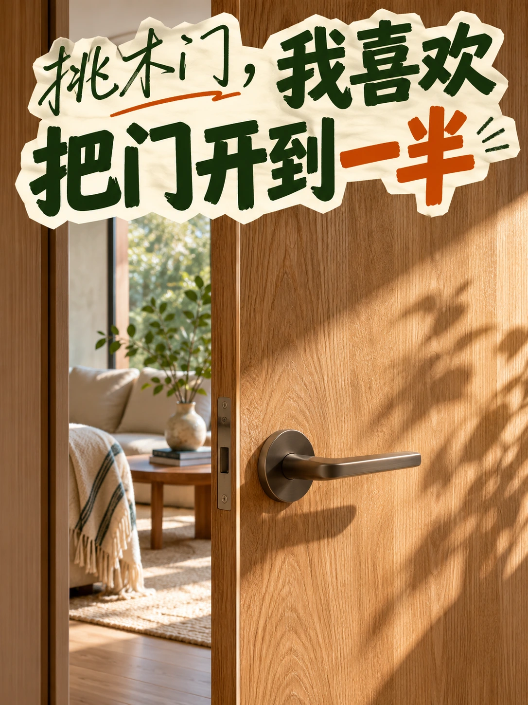
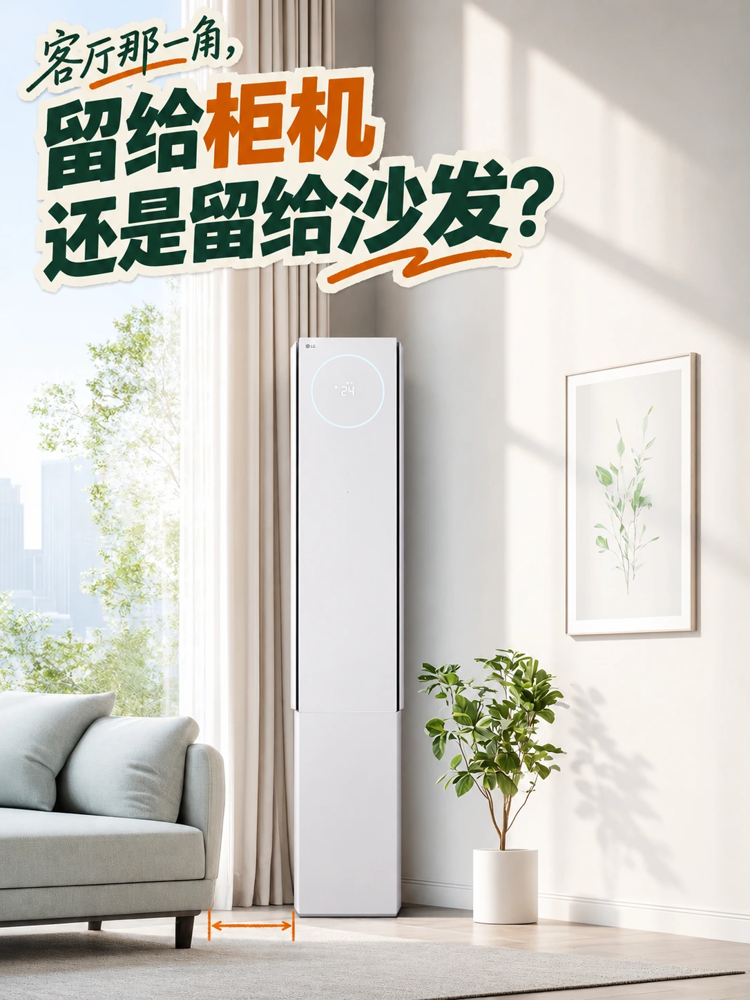
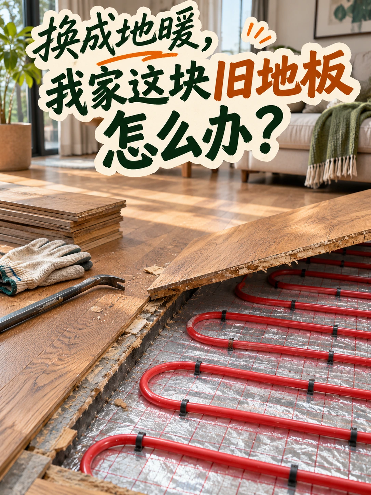
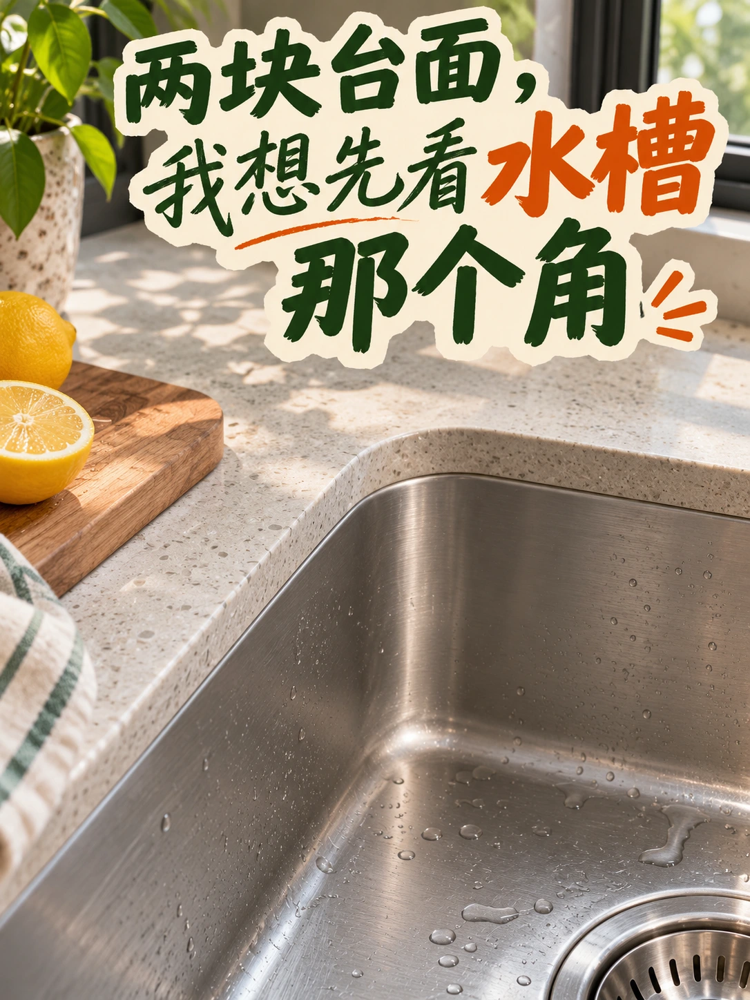
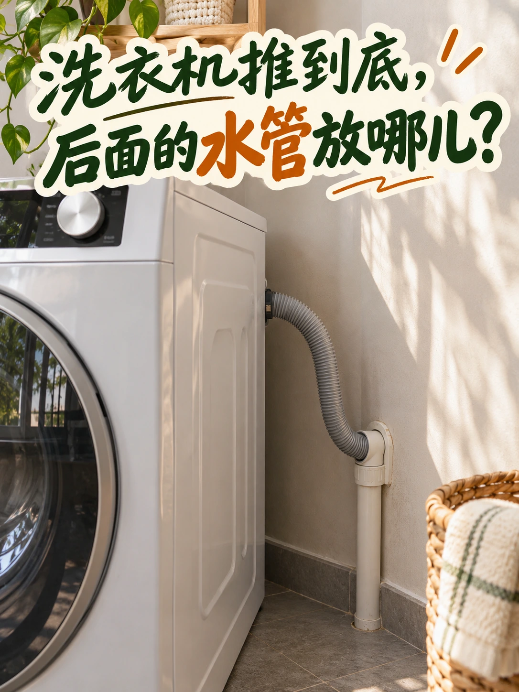
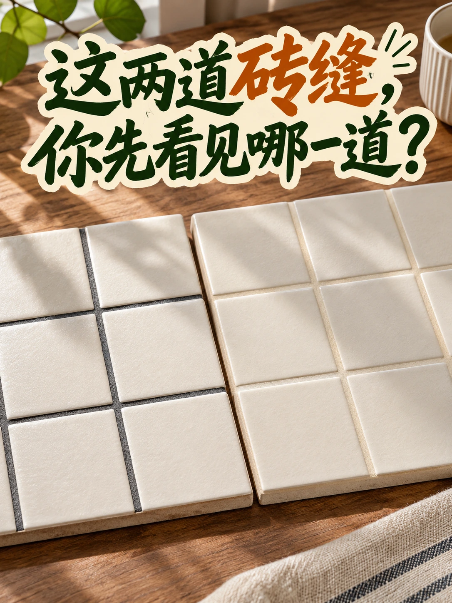
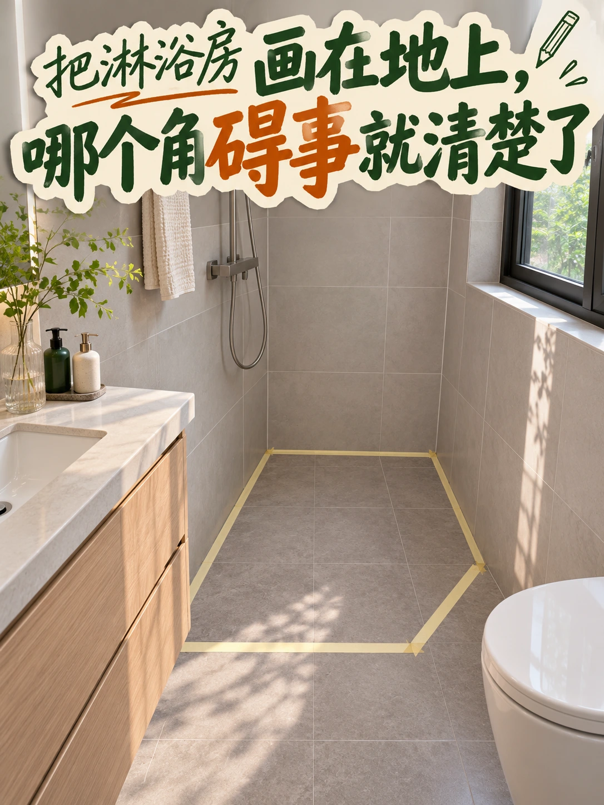
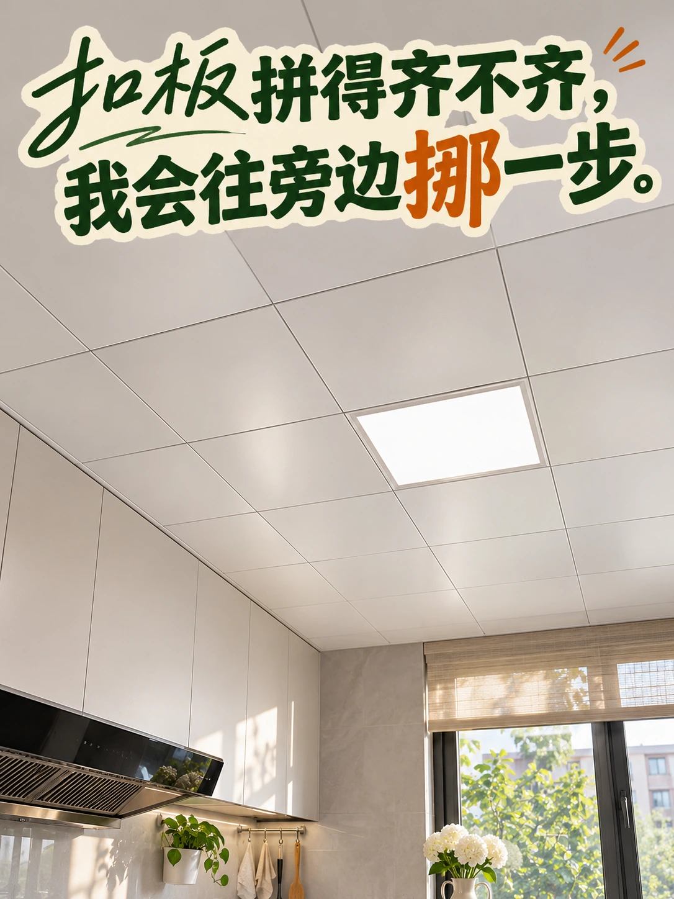

瓷砖损耗 5页




























颗粒板：D-Kuru/Wikimedia Commons，CC BY-SA 3.0 AT（https://creativecommons.org/licenses/by-sa/3.0/at/）；多层板：Rotor DB，英文维基百科，CC BY-SA 3.0（https://creativecommons.org/licenses/by-sa/3.0/）。板材对照页裁切、拼接并加中文标注，沿用署名－相同方式共享3.0。